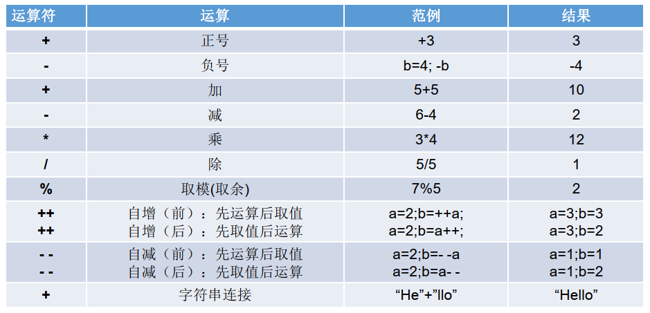
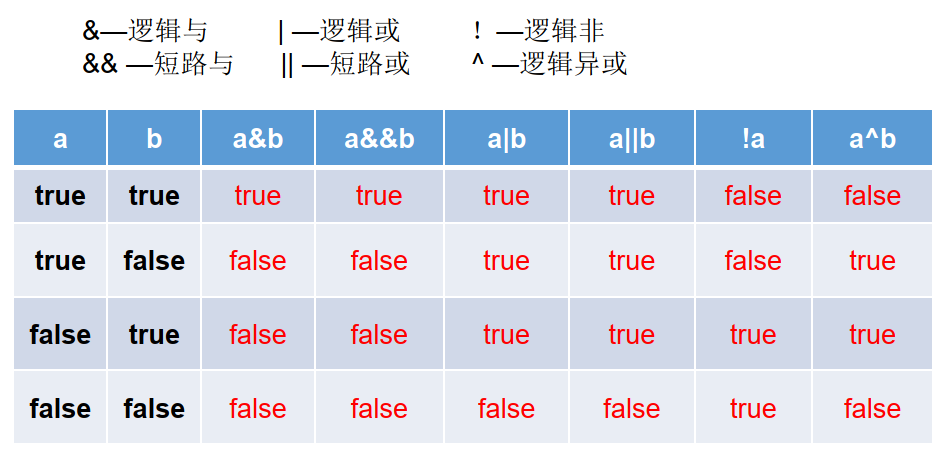
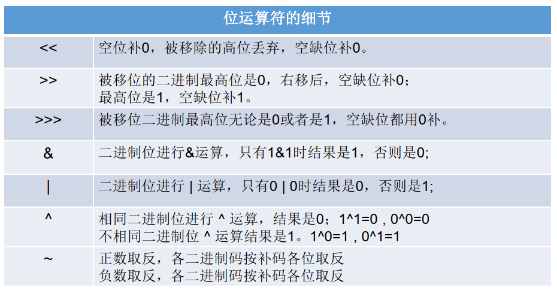
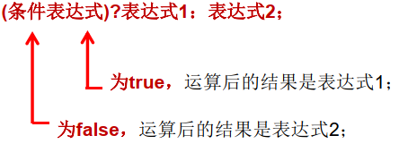
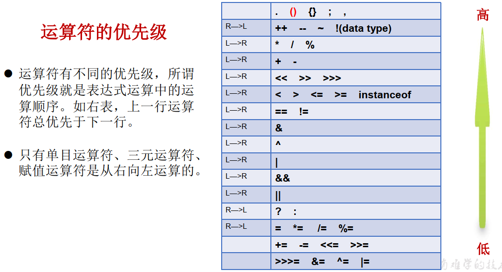

運算符:邏輯運算、賦值、位運算與三元運算
尚硅谷JavaSE筆記-03
運算符

加減乘除
基本都一樣不再贅述
% 取餘的規則
- 結果的符號與被取餘的數符號相同，舉例
-12%5=-2、12%-5=2、-12%-5=-2 - 實際開發中取餘常用來判斷是否能除盡
自增自減的規則
++a，(前++)先運算後取值，舉例a=2;b=++a;結果a=3;b=3a++，先取值後運算，舉例a=2;b=a++;結果a=3;b=2--a，先運算後取值，舉例a=2;b=--a;結果a=1;b=1a--，先取值後運算，舉例a=2;b=a--;結果a=1;b=2- 自增減不會改變數據類型(但可能會溢位)
- 不可連用，舉例
a++++會報錯
另外+也能用在字符串聯接，舉例"he"+"llo"="hello"
= 賦值的規則
- 可以連續賦值，舉例
int i1,i2;i1=i2=10;int i3=10,j3=20; +=、-=、*=、/=、%=不會改變數據類型- 面試題
n=10;n+=(n++)+(++n);n=? - 解: 拆成
n = n + 10 + 12 =32 - 寫
==則是比較運算符，返回boolean
邏輯運算符

- 乍看邏輯跟短路結果是一樣，實際使用上差異為短路後的東西就不執行了
- 舉例:
b=false;n=10;b && (n++>0)=false，但n=10
位運算符

- 操作的都是整數
- « 向左移一位相當於*2，»向右移一位相當於/2，有可能溢位

三元運算符

- 結構:
(條件表達式) ? 表達式1 : 表達式2 - 說明: 條件表達式=
boolean，如果是true則執行表達式1，反之執行2 - 表達式1 與 表達式2 要求類型一致(至少能裝進同一個類型)
- 其實就是簡易版的
if，可以嵌套使用
優先級

- 基本原則是從上到下，從左到右，括號優先
- 自增減、賦值運算、三元運算才從右往左看
上次修改於 2021-11-18